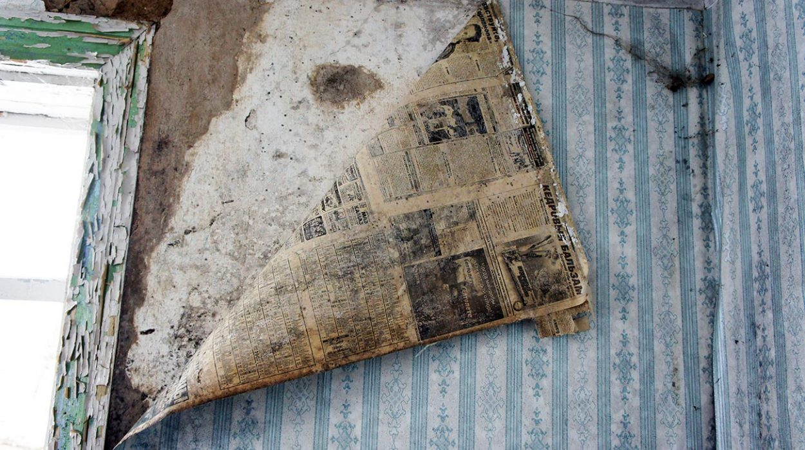
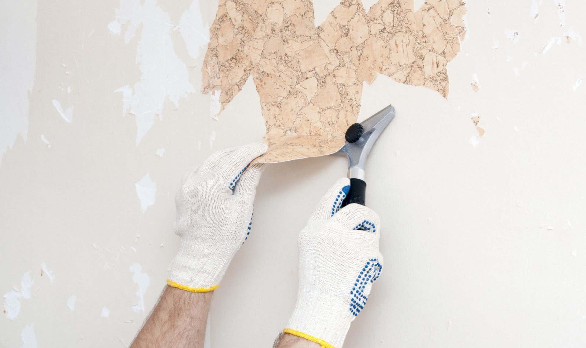

Скоро начнутся новогодние каникулы. Люди с трепетом ожидают боя курантов, загадывают желания и ждут волшебства. Однако уже через пару дней эйфория сменится скукой — зимние каникулы продолжаются, а оливье, мандарины и конфеты уже надоели. В такие моменты многих тянет сделать что-нибудь полезное. Например, переклеить обои в спальне. Ловите пошаговое руководство по этим работам — мы раскроем все секреты и поделимся советами.
Это сегодня обновлением внешнего вида занимаются специалисты со стажем и КамАЗом инструментов за спиной. Раньше домашней «косметикой» заведовали сами жильцы. Вспомните детство — как минимум одна комната в квартире всегда пребывала в «раздетом» виде, пока родители неспешно делали в ней ремонт.
Проблемы с поклейкой, как правило, начинаются еще на старте. Обои буквально въедаются в стены и не поддаются на уговоры шпателя. Тогда очистка стены превращается в многочасовое колупание шпатлевки кончиком ножа. После такого «удовольствия» запал на оклейку пропадает напрочь. И это только начало — далее начнутся трудности с подготовкой стен, подбором рисунка и подгонкой швов. Чтобы успеть сделать все ровно за новогодние каникулы, необходимо правильно подготовиться.
Выбираем инструмент
Залог успешной работы — инструменты. Мы подсмотрели за работой профессиональных обоепереклейщиков и теперь точно знаем, что такое арсенал хорошего мастера. Все приспособления перечислять не станем: для любительской работы достаточно основных орудий.
- Нивелир (отвес, уровень) — необходим для поиска и отметки идеальных линий. Лучше и удобнее использовать лазерные модели. Они автоматически настраиваются и «уравновешиваются».
- Нож — острый и чистый. Идеально подойдет канцелярский: он режет как лезвие и не оставляет заусенцев. При необходимости можно регулировать размер режущей кромки.
- Карандаш — нужен, чтобы делать пометки на стенах и обоях.
- Линейка — нужна, чтобы делать пометки ровно.
- Рулетка — в нашем деле необходимо придерживаться правила «семь раз отмерь, один раз отрежь». Для этого лучше использовать рулетку.
- Валик короткошерстный — нужен для разглаживания обоев после наклеивания.
- Валик длинношерстный — лучше наносит клей и не оставляет пустых полос. Придется взять как минимум два штуки: одну для нанесения клея, другую для снятия обоев и пропитки стен специальным раствором.
- Кисть — выполняет те же задачи, что и валик, но более точечно. Понадобится для нанесения клея на заднюю часть обоев, а также для проклейки труднодоступных мест, углов стен и стыков.
- Шпатели — необходимы две штуки: узкий и широкий. Один нужен для грубой очистки стен от старых обоев, второй — для финальной зачистки неровностей.
- Губки, тряпки — этого добра должно быть в избытке. Во-первых, тряпки нужны для очистки рук. Во-вторых, чистый материал понадобится для разглаживания и протирки обоев от клея.
- Стремянка — можно, конечно, стоять на стуле или табурете. Но это неудобно и небезопасно. Поэтому наш выбор — стремянка.
- Клей — ремонт без клея нельзя назвать ремонтом. Все равно, что клеить обои без обоев.
- Ведро — необходимо для разведения клея. В принципе, подойдет любая подходящая по объему тара, но ведро удобнее всего.
- Обои — без комментариев. Выбираем на вкус и цвет, а также по ширине рулона. Для больших комнат лучше выбирать метровые рулоны. Для небольших помещений, вероятно, хватит классических полуметровок.
Готовим помещение
Необходимо полностью подготовить помещение. Конечно, новые обои можно наклеить поверх старых (а также поверх розеток и выключателей). Но такой подход вряд ли будет практичным. Поэтому сначала нужно очистить стены от старых обоев.
Снимаем обои
Старые обои почти никогда не сдаются без боя. Клей сильно въедается в стену и забирает вместе с собой слой бумажной или флизелиновой основы. Чтобы снять обои полностью и без «ковыряния» шпатлевки, необходимо пропитать их водой. Для этого понадобится малярная ванночка и валик — наливаем теплую воду в ванночку, окунаем валик и смачиваем обои.
Как правило, для удаления старого слоя достаточно провести по одной полосе пару-тройку раз. Через несколько минут старый клей начнет растворяться и обои поддадутся. Поддеваем полосу кончиком шпателя и пытаемся снять. Если обои хорошо пропитаны водой, они легко отстанут от стен. Если классический метод не срабатывает, пробуем снять обои с помощью утюга.